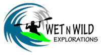
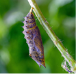
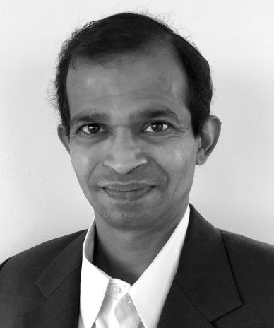
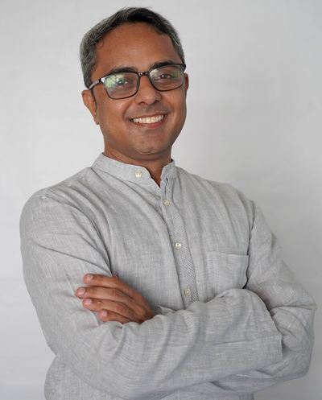

The Team

The expedition will be run by Wet n Wild Explorations, an outdoors adventure company from Ladakh that runs rafting and kayaking adventures across North India for clients across the world.
The expedition will be led by Tsering Chotak, an IRF certified instructor, who has done first descents across numerous rivers in Bhutan and India. The guides are certified as wilderness first responders and whitewater rescue technicians.

The Cocoon Initiative is an invitation to take a pause, slowdown and go within oneself for rest and care. It is an opportunity for a civil society leader to take a break from their work to rest, rejuvenate, reflect and revive their core strengths, clarify their purpose and heal their body, mind and spirit from years of having given fully into one’s cause
The operational logistics will be handled by Tarunima Prabhakar. She is the co-founder of Tattle, a civic tech organization that works to combat online harms. She spends all the time that she is not at a computer or at work events, paddling in the river or ambling on trails. This initiative is her passion project and a way of paying it forward to all the stellar people in the social sector who have guided and inspired her over the years.
The Mentors

Donald Lobo
Lobo serves as Executive Director of the Chintu Gudiya Foundation, a private family foundation based in San Francisco, CA, that funds NGOs and organizations developing open-source software for the public good. Their current focus is working with NGOs in India via the Project Tech4Dev and Glific initiatives. Lobo is an avid climber.
Uma Subramanian
Uma is a social worker and has over 15 years of experience of working with children at risk. She conceptualized and co-founded RATI (Rights. Action. Technology. Inclusion) and its Aarambh India Initiative. At RATI, She is a runner and fitness enthusiast, Uma is committed to nurturing safe and empowering spaces for young karyakartas in the development sector—spaces where they can experiment, grow, and thrive.

Vishal Talreja
Vishal is an Educator and Social Entrepreneur based in India. He co-founded Dream a Dream along with 11 others in 1999. Vishal has authored multiple research papers, reports, white papers, policy briefs and articles on Education. He has also co-authored a book, ‘When We Thrive, Our World Thrives’ along with Dr Connie K Chung and Dream a Dream staff and participants. He has also published a book of poems called, ‘My Soul Stirring’. He is also the founder of the Cocoon Initiative.